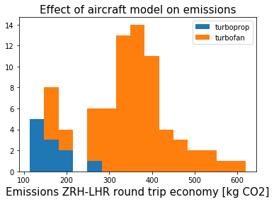
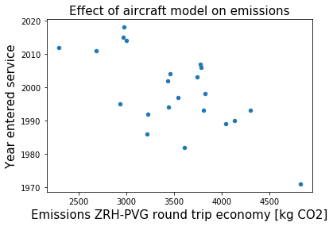

Seeing the large spread of CO2 emissions depending on aircraft type made me wonder - what variables are at work here? A couple of nice results came up.
Considering short haul flights, the distribution of emissions has a cluster of entries in the 100-200 kg CO2 range. Interestingly, most of these models are turboprops - aircraft from the 1980's and 90's with propellers rather than 'jet engines'. Only the most recent generation of turbofan aircraft can match such low emissions per passenger, such as the Airbus A319/A320/A321 neo (new engine option) or the Boeing 737 MAX 7/8/9 or 747-8I.
Considering long haul flights, where all the aircraft have turbofan engines, there's a nice correlation between the year of the first service flight of the aircraft and its emissions. Of course, date of first service flight doesn't correlate directly with engine model, and doesn't mean that the aircraft hasn't been upgraded in the meantime.
